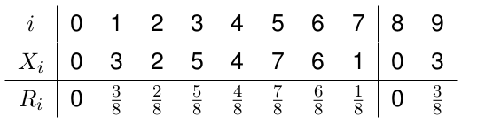
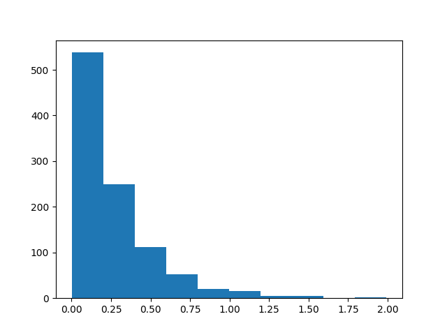

F(X) = U
Başlıktaki matematiğin alt dallarından Simulasyon'un en temel formüllerinden biri. Basitliği derin bir sonucu gizliyor aslında; ve simulasyon dahil olmak üzere en az iki istatistiksel yöntemi mümkün kılıyor. Formülü ve mümkün kıldığı iki yöntemi bu yazıda göreceğiz.
Başlıkta söylemi tam notasyonla vermek gerekirse;
$$ F_X(X) \sim U(0,1) $$
Yani, dağılımı her ne olursa olsun, bu dağılımdan gelen bir rasgele değişkenin değerlerini o dağılımın kümülatif dağılım fonksiyonuna (cdf) geçersek, elde edilen değerler yeni bir rasgele değişken $U(0,1)$ olarak, yani birörnek (uniform) olarak dağılacaktır! Müthiş bir sonuç. Bu metot simülasyonda Ters Transform Metotu (Inverse Transform Method) olarak geçiyor.
Teori
Diyelim ki $X$ cdf $F_X$'e sahip surekli rasgele degisken. O zaman $F_X(X) \sim U(0,1)$.
İspat
$Y = F_X(X)$ olsun, ve $Y$'nin cdf'i $G(y)$. O zaman
$$ G(y) = P(Y \le y) = P(F_X(X) \le y) $$
Olasılık operatörü içinde iki tarafa $F_X$'in tersini uygulayalım, sol tarafta tersi ile kendisi sonucu fonksiyon kaybolur, geri kalanlar,
$$ = P(X \le F_X^{-1}(y) ) $$
Üstteki ifadeye geldik. Bu ifade de aslında bir cdf hesabı değil midir? Evet. $X$'in cdf hesabıdır,
$$ = F_X(F_X^{-1}(y)) = y $$
$$ G(y) = y $$
Yani $y$'nin cdf değeri $y$'nin kendisidir, bu da sadece $Y$ birörnek olarak dağılmışsa mümkündür [1].
Herhangi Bir Dağılım İçin Rasgele Sayı Üretmek
Bu teorinin rasgele sayı üretmek için nasıl kullanıldığını görmek zor değil. Çünkü eğer
$$ F_X(X) = U $$
ise
$$ X = F_X^{-1}(U) $$
de doğrudur; O zaman birörnek dağılımdan örneklem alırız, bu örneklem içindeki sayıları teker teker üretmek istediğimiz dağılımın cdf'inin {\em tersine} geçeriz, ve elimizdeki sonuçlar otomatik olarak hedeflediğimiz dağılımdan gelen sayılar olur!
Not: Tabii $F^{-1}$ hesabının yapılabilmesi için bu fonksiyonun bir analitik formu olması gerekir; bazı durumlarda bu mümkün olmayabilir. Mesela normal (gaussian) dağılımın cdf'inin tersinin analitik formu mevcut değildir. Ya da çok daha çetrefil, çok boyutlu dağılımlar durumunda da bu mümkün olmayabilir. Bu tür durumlar için başka yöntemler var, Markov Zinciri Monte Carlo (MCMC) yöntemleri mesela, ya da daha basit Kabul-Reddet (Accept-Rejection) yöntemi... Dağılımları simüle etme konusunun arkasında derin bir literatür var [2].
Peki $U$ Nereden Geliyor?
Diyelim ki elimizde tersi alınabilir bir cdf var, ve artık bu dağılımdan sayı üretmek istiyoruz. Peki cdf tersine verilecek birörnek sayılar nereden gelecek?
Bu durumda sözde rasgele (pseudorandom) sayı üretimi konusuna girebiliriz. Favori hesap kütüphanemizden birörnek sayılar üretebiliriz, fakat bu kütüphanelerin ne yaptığını bilmek iyi olur. Kendimiz rasgele sayı üretmek istiyorsak, bunun en kolay, etkili yolu lineer eşleşikşel üretici (linear congruential generator) kullanmak.
$$ Z_i = (a Z_{i-1} + c) \bmod m $$
$a$ çarpan, $m$ ise genlik (modülüs). $\bmod$ bildiğimiz gibi modülo matematiğinden geliyor, $4 \bmod 2 = 0$, $5 \bmod 3 = 2$, vs., bölümden arta kalanların matematiği yani. Modülo operatörü sayesinde $Z_i$ sonuçları 1 ile $m-1$ arasında olacaktır. Çoğunlukla $m$ büyük ve asal bir sayı olarak seçilir. $R_i = Z_i / m$ ve $R_i \in (0,1)$. Amaç bir dizi $R_i$'in $U(0,1)$'den geliyormuş gibi gözükmesini sağlamak. Bu seri tabii ki bir süre sonra kendini tekrar edecektir, ama bunun olması için uzun zaman geçiyorsa bu bizim için iyi bir sonuçtur.
$a,c,m$'in dikkatli seçilmesi gerekir, ki tekrarsız periyot uzun ve üretilen sayıların istatistiki kalitesi iyi olsun. Eğer $c=0$ ise üstte gösterilene çarpımsal üreteç ismi veriliyor. Neyse, örnek olarak
$$ Z_i = (5 Z_{i-1} + 3) \bmod 8 $$
kullanalım. Eğer $Z_0 = 0$ ise (ki bu başlangıç noktasına tohum -seed- ismi de verilir) bir sonraki sayı $Z_1 = (5 Z_0 + 3) \bmod 8 = 3$ olur, ve böyle devam edersek,

Görüldüğü gibi 8. adımda başa dönmüş olduk, çünkü $Z_8 = 0$. Bu üreteç tam-periyot üretecidir, yani $\bmod \ 8$ dedik ve tekrar edene kadar 8 tane sayı ürettik. Genel olarak tam periyot iyi bir şeydir. Eğer
$$ Z_i = (5 Z_{i-1} + 1) \bmod 7$$
seçseydik, $Z_0=1$ ile $1,6,3,2,4,6$ yani küt diye 6'ya döndük. Bu olmadı, tam periyot değil. Eğer $Z_0=5$ seçseydik sonuç daha da kötü olurdu, bir sonraki sayı başlangıcın kendisi, yani 5! Bu durumda tek bir tane bile sözde rasgele sayı bile üretememiş olurduk.
Çok iyi üreteçlerden biri
$$ Z_i = 16807 Z_{i-1} \bmod (2^{31}-1)$$
Bu çok hızlı işleyen, tekrar edene kadar 2 milyar (dikkat: milyar) sayıdan daha fazla sayı üretebilen bir üreteçtir. Kodu altta bulunabilir, $2^{31}-1=2147483647$ olduğunu biliyoruz,
def do_unif(ix):
u = (16807*ix) % 2147483647
return u
u = do_unif(1e7)
print u
u = do_unif(u)
print u
u = do_unif(u)
print u
566275534.0
1892860081.0
476634709.0
Biraz daha farklı bir yaklaşım [1], [5, sf. 215],
def do_unif(ix):
k1 = int(ix/127773)
ix = 16807*(ix - k1*127773) - k1*2836
if ix < 0: ix = ix + 2147483647
u = ix*4.656612875e-10 # 1'den kucuk olmasi icin
return ix, u
ix, u = do_unif(1e7)
print u
ix, u = do_unif(ix)
print u
ix, u = do_unif(ix)
print u
0.263692594242
0.881431662376
0.22195033226
Eğer tek bir çağrı ile istediğimiz kadar birörnek sayı üretmek istiyorsak,
def unif(size,seed=1e7):
tmp = seed; res = []
for i in range(size):
tmp,u=do_unif(tmp)
res.append(u)
return np.array(res)
print unif(size=10)
[ 0.26369259 0.88143166 0.22195033 0.31923449 0.37412169 0.8632809
0.16214486 0.16868319 0.05836612 0.95940828]
Örnek: Üstel Rasgele Değişken Üretmek
$X = F^{-1}(U)$ prensibini kullanarak üstel (exponential) dağılımdan gelen rasgele sayılar üretelim. Birörnek üreticimiz var, üstel dağılım için cdf'in tersini biliyoruz, ki bu $F^{-1}(p;\lambda) = -\ln(1-p) / \lambda$. Tüm bunları biraraya koyarsak,
x = unif(size=1000)
lam = 4.
y = -np.log(1-x) / lam # cdf tersi
f=plt.figure();
plt.hist(y)
plt.savefig('stat_fxu_02.png')

Üstel dağılıma benziyor! İşin iyi tarafı bu üretimi yapmak için tüm öğeleri evde kendimiz pişirdik. Birörnek rasgele sayıları bile kendimiz üretiyoruz.
Uyum Derecesi ve Düzgünlük Testi (Goodness-of-Fit, Smooth Test)
$F_X(X) = U$ başka bir açıdan bir "numara" olarak ta kullanılabilir, çünkü teoriye göre sadece ve sadece $F_X$ fonksiyonu hakikaten $X$'in cdf'i ise ispat geçerli. Bu gerçeği bir istatistiki test için başlangıç noktası olarak kullanabiliriz; Diyelim ki elimizde bir $X$ var ve dağılımının ne olduğunu bilmiyoruz. Ama eğer doğru dağılımı seçmişsek, mesela $F_0$, $F_0(X)$ bize birörnek sonuç verir, değilse vermez. O zaman bir tahmini cdf'i birörneklik testiyle birleştirirsek, verinin / rasgele değişkenin dağılımın ne olduğunu test eden bir istatistiki test bulmuş oluruz [3, sf. 325].
Birörneklik testi dedik, bunun için zaten bilinen chi kare, K-S uyum derece testi gibi testleri mi kullansak acaba? Neyman adlı istatistikçi mevcut olanları kullanmak yerine özellikle birörnek dağılımına odaklı bir test yaratmaya karar verdi. Neyman'ın düzgünlük testi (Neyman's smooth test) birkaç baz fonksiyonunun toplamından oluşan bir alternatifi (0,1) aralığına gömüyor (embed), ki sıfır hipotezinde bu gömülü fonksiyon bize birörnek sonuçla aynı sonucu verir, ama birörneklikten sapma varsa, baz fonksiyonları öyle oluşturulmuştur ki bu sapmanın etkisi düzgün, sürekli bir şekilde birörneklikten ayrılır (ki testin ismi buradan geliyor). Ayrıca baz fonksiyonları öyle seçilmiştir ki sıfır hipotezi altında test için bir chi kare dağılımı elde ederiz, birörnek olmama durumunu bu chi kare dağılımda aykırı bölgeye düşmek olarak irdeleyebiliriz, ve testimiz bunun üzerinden hesaplanır.
Bu özel fonksiyonlar nelerdir? Onları $h_j(y)$ olarak gösterelim, ki $j=1,..,d$ olsun, yani $d$ tane baz fonksiyonu var. Neyman'a göre $d=4$ yeterlidir (baz fonksiyonuna göre değişir tabii, biz alttaki örnekte 5 kullandık). Bu fonksiyonlara bazı şartlar getiriliyor, öncelikle $h_j$'ler sabit fonksiyona (yani 1'e) ve birbirlerine dikgen (orthogonal) olmalılar. Yani
$$ \int_{0}^{1} h_j(y) \mathrm{d} y = 0 $$
$$ \int_{0}^{1} h_k(y)h_j(y) \mathrm{d} y = 0 $$
Ayrıca büyüklüğü (yani karesi) normalize edilmiş olmalı
$$ \int_{0}^{1} h_j(y)^2 \mathrm{d} y = 1 \qquad (1) $$
Bu şartları tatmin eden hangi fonksiyonlar vardır? Aklımıza gelen her fonksiyon tipi üstteki şartlara uymayabilir. Neyman Legendre polinomları denen polinomları kullandı, fakat aslında üstteki şartları yerine getiren
$$ h_j(y) = c_j \cos (2\pi j y) $$
ki $c_j$ normalizasyon sabiti, gayet rahat kullanılabilir. Dikkat, üstteki sabit $h_j$'yi bir dağılım haline getirmez, "büyüklük hesabı için" onu normalize eder. Sebebini birazdan göreceğiz.
Not: Üstteki fonksiyon eğer Fourier serilerini hatırlattıysa bu doğru bir gözlemdir, böyle bir bağlantı var.. Birbirine dikgen fonksiyonlar özel fonksiyonlar tabii, Fourier serilerinde bu sebeple kullanılıyorlar, ve dikgenlik lineer cebirde de çok ortaya çıkar. Kontrol edilmek istenirse $1, \cos (2\pi y), \cos (4\pi y), \cos (6 \pi y), ..$ fonksiyonlarının birbirine dikgen olduğu entegral hesabını yapılarak görülebilir.
Devam edelim, (1)'i tatmin etmek için gereken $c_j$'i hesaplayalım,
$$ \int_{0}^{1} c_j^2 \cos(2 \pi y)^2 \mathrm{d} y = 1 $$
$$ \int_{0}^{1}\cos(2 \pi y)^2 \mathrm{d} y = 1/c_j^2 $$
Trigonometrik eşitlik [4, sf 435]
$$ \cos(\theta)^2 = \frac{1 + \cos 2 \theta }{2}$$
O zaman,
$$ \cos(2 \pi y)^2 = \frac{1}{2} + \frac{1}{2}\cos(4 \pi y) $$
Entegrale geri koyalım,
$$ \int_{0}^{1} \frac{1}{2} + \frac{1}{2}\cos(4 \pi y) \mathrm{d} y $$
$$ = \frac{y}{2} + \frac{1}{8\pi}\sin(4 \pi y) \bigg|_{0}^{1} \Rightarrow \frac{1}{2} = 1/c_j^2 $$
$$ c_j = \sqrt{2} $$
Bulunan $c_j$ her $j$ için geçerli olacaktır.
Düzgünlük testi için önce $x_i$ veri noktaları o verinin geldiğini düşündüğümüz cdf'e geçilir, yani $y_i = F(x_i)$ hesaplanır. Ardından,
$$ \overline{h_j} = \frac{1}{n} \sum_{i=1}^{n} h_j(y_i) $$
Sıfır hipotezi altında ve Büyük Sayılar Kanununa göre $\overline{h_j} \to0$.
$\sqrt{n} \cdot \overline{h_j}$ ise Merkezi Limit Teorisi'ne göre Gaussian'dır,
ve bu Gaussian'ın varyansı 1 olacaktır. Demek ki
$$ \Psi^2 = n \sum_{j=1}^{d} \overline{h_j}^2 $$
hesabı sıfır hipotezi altında $\chi^2_d$ dağılımına sahiptir. $h_j$'lerin birbirine dikgen seçilmesinin sebebi şimdi biraz daha açıklık kazanıyor herhalde, dikgen fonksiyonlar ile arasında hiç korelasyon olmayan standart normaller üretiyoruz, ve bu normallerin toplamının bize chi kare vermesini bekliyoruz (chi kare için korelasyonsuz standard normallerin toplamı gerekir).
$\overline{h_j} \to 0$ ispatı için sıfır hipotezinde $y_i$'lerin, ya da $u_i$ diyelim, birörnek dağılım $U(0,1)$'dan geldiğini hatırlayalım, yani o zaman $h_j(U)$ bir rasgele değişkendir, ve
$$ h_j(u_1) + h_j(u_2) + .. + h_j(u_n) / n $$
$h_j$'nin nüfus beklentisine yaklaşır. Peki $h_j$'in nüfus beklentisi nedir? Bunun için
$$ E(h_j) = \int_{-\infty}^{\infty} f_U(u)h_j(u) \mathrm{d} u $$
$f_U(u) = 1$, ayrıca (0,1) arasına odaklı olduğumuz için,
$$ = \int_{0}^{1} h_j(u) \mathrm{d} u = \int_{0}^{1} \cos 2\pi j u \mathrm{d} u = \frac{\sin 2j\pi u }{2j\pi u} \bigg|_{0}^{1} = 0 $$
$j$ ne olursa olsun beklenti sıfır demektir bu. Peki varyans?
$$ Var(h_j) = E(h_j^2)-E(h_j)^2 = \int_{-\infty}^{\infty} f_U(u)h_j^2(u) \mathrm{d} u $$
üstte $E(h_j)=0$ olduğunu bulduk, bu terim üstteki formülde iptal oldu. Ve (1)'ın de yardımıyla,
$$ = \int_{0}^{1} h_j^2(u) \mathrm{d} u = 1$$
Prosedür böylece tamamlandı.
1) cdf ile veriden $y=F(x)$ hesapla
2) $h_j$ hesapla, ki bizim seçtiğimiz baz için $c_j = \sqrt{2}$, ardından $\overline{h_j}$
3) En son $\Psi^2$, sonucu $\chi^2_d$ üzerinde kontrol et.
Örnek
Bir standart normal, bir 4 derece serbestliğe sahip bir Öğrenci t dağılımı, bir de üstel (exponential) dağılımdan üretilmiş veriyi standart normal olup olmadığına bakmak için test ettik.
from scipy.stats import norm
from scipy.stats import t
from scipy.stats import expon
s = 200000
np.random.seed(0)
xnorm = norm.rvs(size=s)
xstudent = t.rvs(df=4, size=s)
xexp = expon.rvs(scale=1,size=s)
from scipy.stats import norm
def test(x,d=5,cdf=norm.cdf):
y = cdf(x)
c = np.sqrt(2)
# baz fonksiyonlar
hs = [c*np.cos(2*np.pi*i*x) for i in range(1,d+1)]
res = [xx.mean() for xx in hs]
res = [xx**2 for xx in res]
print len(x)*np.sum(res)
test(xstudent)
test(xnorm)
test(xexp)
from scipy.stats import chi2
dof = 5
print 'chi kare', chi2.ppf(0.95,dof)
12.1463285033
2.20265705473
259.103849686
chi kare 11.0704976935
Görüldüğü gibi Öğrenci t reddedildi, normal kabul edildi, üstel çok ciddi şekilde reddedildi. Öğrenci t dağılımı normal dağılıma çok benzer bu arada, buna rağmen arada büyük fark dikkate değer.
Kaynaklar
[1] Goldsman, D., ISyE 6644 - Simulation Lecture, http://www2.isye.gatech.edu/~sman/courses/6644/
[2] Ross, Introduction to Probability Models, 10th Edition
[3] Shalizi, Advanced Data Analysis from an Elementary Point of View
[4] Thomas, Thomas' Calculus, 11th Ed
[5] Schrage, A Guide to Simulation
Yukarı